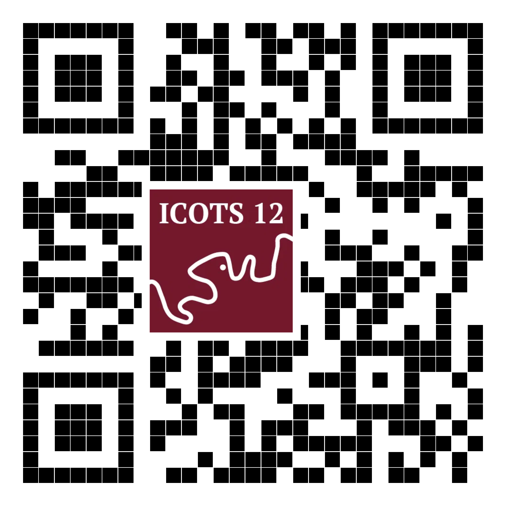
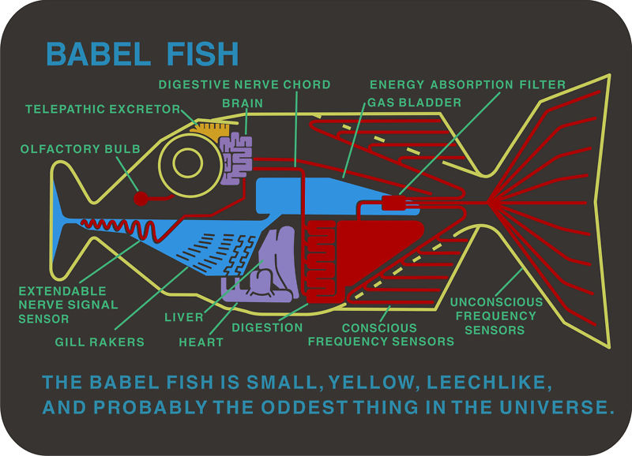

Talk Data to Me?
Supporting English Language Learners in Statistics and Data Science
Waipapa Taumata Rau University of Auckland
University of Toronto
University of Toronto
University of Guelph
University of Toronto
Waipapa Taumata Rau University of Auckland
Waipapa Taumata Rau University of Auckland
Waipapa Taumata Rau University of Auckland
Warm Pacific greetings
Talofa lavaSamoan, Malo e leleiTongan, Kia oranaCook Islands Māori, Mālo niTokelauan, Fakaalofa lahi atuNiuean, Ni sa bulaFijian, FakatalofaTuvaluan, Kia orate reo Māori.

Unknown
Greetings from New Zealand
1900-1910 (with later colouring likely added). Gift of Patricia M. Mitchell, 1989. Te Papa (PS.000812)
Acknowledgement of country
We acknowledge the Jagera and Turrbal peoples as the Traditional Custodians of Meanjin (Brisbane), the lands and waterways where we gather, learn, and share knowledge during ICOTS 12.
We pay our respects to their Elders past, present, and emerging, recognizing their enduring and continuous connection to land, water, and community.
Mike Tippo
Australia, QLD, b.1954
The making of Queensland Aboriginal law (1989)
Synthetic polymer paint on canvas
Queensland Art Gallery | Gallery of Modern Art © Mike Tippo (Collection link)
Tangata whenua
The teaching and research that informs this presentation were conducted on the traditional lands of Māori under te Tiriti o Waitangi and of the Anishinaabe, the Haudenosaunee and the Mississaugas of the Credit under the Dish With One Spoon Treaty and, more recently, Treaty 13 between the Mississaugas and the British Crown.
Additional experiences at Southwest University, China, also informed this work.
Positionality statement
English is the first language I learned.
I have never had my personal success, safety, or access to resources rely on my abilities in another language.
Language is not just a skill — it is part of culture, identity, and how we know others and make ourselves known in turn.
Leonardo da Vinci
Italy, b.1452–d.1519
Portrait of an unknown woman (c. 1490–96)
Oil on wood panel | Musée du Louvre, Paris
Will this be useful to you?
Not a lot of ELLs? Should you sneak out now?
- Connects to: Universal Design for Learning & trauma-informed pedagogy.
- May pull financial levers in your institution that other lenses do not
Pere Borrell del Caso
Spain, b.1835–d.1910
Escaping Criticism (Huyendo de la crítica) (1874)
Oil on canvas | Collection of the Banco de España, Madrid
Will this be useful to any of us?
- The elephant in the room? AI babel fish for all?

- The importance of process: While AI and technological enhancements will change how we approach products, the human process will continue to matter.
Max Ernst
Germany, b.1891–d.1976
The Elephant Celebes (Celebes) (1921)
Oil on canvas | Tate Modern, London
Around the globe in 80 years
- Rapid globalisation and student mobility over the last 80 years, particularly Asia → Western Anglophone nations. (Altbach, Reisberg, and Rumbley 2009; Marginson 2016)
- English as the lingua franca of academia. (Wilkins and Urbanovič 2014)
- Higher ed marketised, international students a critical source of revenue for institutions. (Knight 2004; OECD 2025).
Marguerite Gérard
France, b.1761–d.1837
Young Woman Consulting a Globe (Jeune femme consultant un globe) (c. 1790)
Oil on panel | Private Collection
International student enrollments in universities

International ≠ ELL
English Language Learners (ELL): students who speak another language more fluently than they speak English AND need support to engage confidently in the standard English dialect of their educational environment.
A note on terms: ELL is used by the Ministry of Education in Aotearoa New Zealand Ministry of Education (2024). Other educational organisations advocate for “multilingual learners” (ESL/ELD Resource Group of Ontario 2022). In Australia the term “EAL/D” includes Aboriginal and Torres Strait Islander students who may speak Aboriginal English and Kriol (NSW Education Standards Authority 2026).
International students from China
Three levels of strategies/ideas
Small: teaching practices
- The power of pausing: Pausing 🧘♀️ > going slow 🐢
- Speaking AND writing instructions and answers
- Be explicits with navigating shared languages and translanguaging
Traditionally attributed to Zhao Ji
China, b.1082-d.1135
Two ducks among reeds at the water’s edge (Ming or Qing dynasty, 15th-18th century)
Ink and color on silk | Freer Gallery of Art Collection, Gift of Charles Lang Freer
::::
Medium: assessment design
- Scaffold contexts for interest and accessibility
Copy after Qiu Ying 仇英 in the 17th century China, b.1494-d.1552
The hall of scenic beauty 有美堂圖
Ink and color on silk | Freer Gallery of Art Collection, Gift of Charles Lang Freer
Big: Design and institutional support
- Communication skills workshops
- Relational pedagogies
Ito Jakuchu
Japan, b.1716-d.1800
Elephant (179-)
Ink on paper, hanging scroll |
Examples
Practice example: Teaching undergrad data science in China
- Students were reluctant to raise hands or answer questions in front of the whole class.
- They weren’t all disengaged; they needed a sense of safety and the appropriate time and support to engage with the activities.
- Modified “Think, Pair, Share”
- Structure timing
- Use anonymous writing submission tools
From NO raised hands to 50%-70% of the class submitting answers
Survey study: Large intro stats and data science course at an English-medium university
- This course was intentionally designed to incorporate recommended techniques for teaching and developing students’ written communication skills, alongside the introduction of statistical concepts and computing skills (Gibbs and Taback 2021).
- Low student-to-teaching assistant ratio (24:1).
- Significant collaboration with the university’s English Language Learning unit to support teaching assistant training and aid in the upskilling of instructors.
- Four iterations of a large, first-year undergraduate introductory statistics and data science course at the University of Toronto.
- Delivery: online between September 2020 and April 2022.
- ELLs accounted for 76% to 83% of enrolments over the study period.
- n=1,697 students participated in a pre- and post- survey.
- The course design integrated frequent, low-stakes writing practice through weekly writing tasks and online discussion boards, culminating in a scaffolded group project that included a proposal, final report, and peer review.
- Data were collected using pre- and post-course surveys in which students self-assessed their professional writing proficiency and identified the course components most beneficial to their development
- Improvements for all: The proportion of students rating their proficiency as Good or higher rose from 63% at the start of the semester to 78% by the end.
- ELL gains: Of ELLs who began the course rating themselves as having Poor or Adequate proficiency (n = 572), 57% rated themselves as Good or above by the end of the course.
- Effective components: Weekly writing tasks, online discussion boards, and the final project were rated as most beneficial for developing their writing skills.
- We cannot assess the extent to which cross-cultural differences in survey and self-rating behaviours were present and/or evolved as students spent more time acclimatising to the institution.
- In future work, variable response styles may be important to consider (Dolnicar and Grün 2007), potentially alongside links to assessment-based evaluation.
With gratitude 💐
The many students, teaching assistants, and colleagues who have contributed to our understanding and the development of our teaching practices for supporting English Language Learners.
Funding: Waipapa Taumata Rau | University of Auckland Faculty of Science Scholarship of Teaching and Learning Grant
Thank you also to our ICOTS 12 conference proceedings reviewers — your thoughtful comments helped us improve this presentation and accompanying paper.
Thank you to all those involved with making ICOTS happen. And thanks to the lads in the AV booth at the back!
Last, but certainly not least, thank YOU for being here.
Let’s talk!
About these slides:
All images have alt text.
You can translate these slides in your browser.
There are references on the following slides.
References
Icons
- Fedora by parkjisun from Noun Project (CC BY 3.0)
12th International Conference on Teaching Statistics (ICOTS 12) | Brisbane, Australia